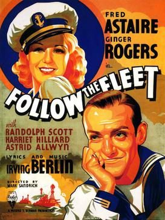

Follow the Fleet
Starring: Fred Astaire, Ginger Rogers, Randolph Scott
Director: Mark Sandrich
Writer: Dwight Taylor, Allan Scott
Producer: Pandro S. Berman
Follow the Fleet is a 1936 American musical comedy film with a nautical theme starring Fred Astaire and Ginger Rogers in their fifth collaboration as dance partners. It also features Randolph Scott, Harriet Hilliard, and Astrid Allwyn, with music and lyrics by Irving Berlin. Lucille Ball and Betty Grable also appear, in supporting roles.
Previous Showings
13 Runs • 7 Festivals
Original Billings: 1 run (March 11, 1936)
Original Run: March 11, 1936 (Wednesday - Sunday)
All runs on record (13):
- March 11, 1936 (Wednesday - Sunday)Fred Astaire, Ginger Rogers
- July 12 - 13, 1987w/ Swing Time, Roberta, Shall We Dance, Carefree, Flying Down to Rio, You'll Never Get Rich
- May 25 - 27, 1990w/ The Gay Divorcee
- January 14 - 15, 1993w/ Flying Down to Rio
- August 3 - 4, 1995w/ Once Upon a Honeymoon
- October 25 - 27, 1996w/ Sylvia Scarlett
- March 19 - 22, 1998Fred Astaire ~ Silent Movie Saturdaysw/ Top Hat
- November 17 - 18, 2004Marlon Brando: His First Decade in Films, plus Nine Musicals with Fred Astaire and Ginger Rogersw/ Bachelor Mother
- July 12, 2007Summer 2007, including Films Starring Fred Astairew/ Shall We Dance
- June 14 - 15, 2014Fred Astaire 2014w/ Easter Parade
- November 25 - 27, 2016Astaire and Rogers plus The Marx Brothersw/ Horse Feathers
- March 15 - 17, 2024Fred Astaire 2024w/ Shall We Dance
- May 22 - 23, 2025Fred Astaire 2025w/ Flying Down to Rio